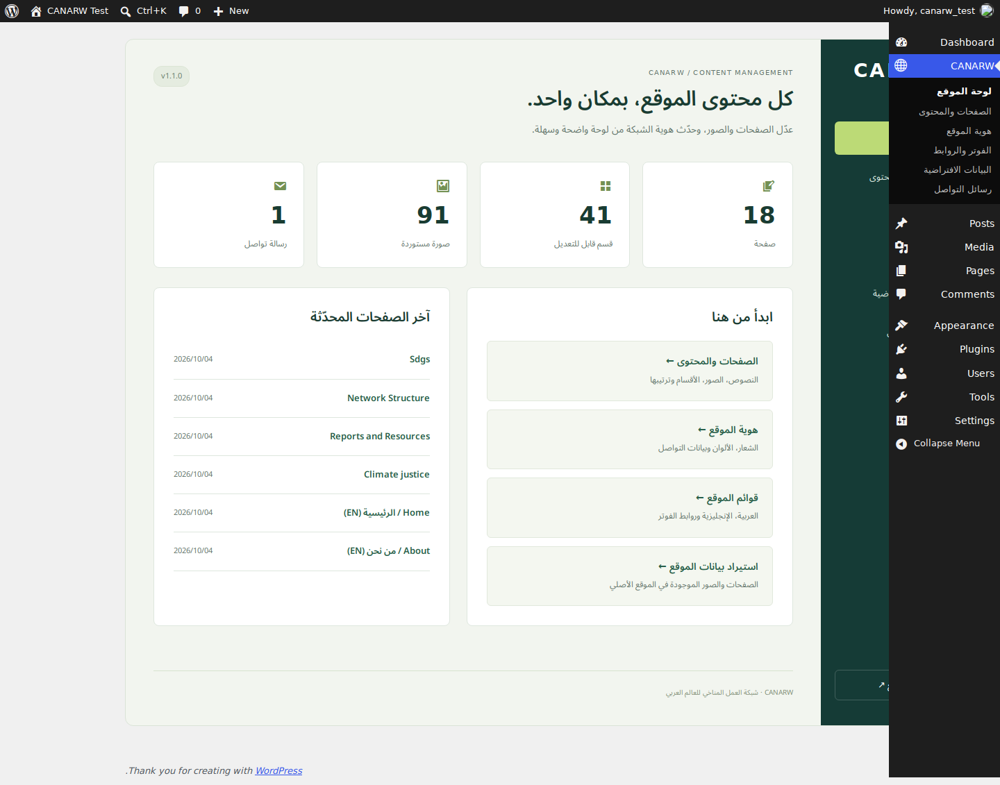
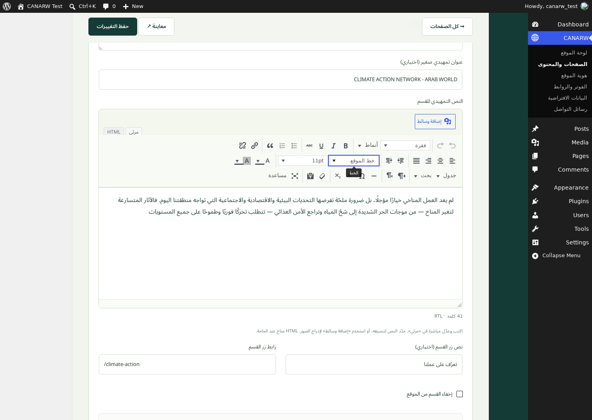

التثبيت بخمس خطوات
1ارفع القالب
ووردبريس ← المظهر ← قوالب ← أضف قالباً جديداً ← رفع قالب. اختر canarw-wordpress-theme-v1.1.0.zip واضغط التنصيب الآن.
2فعّل CANARW
اضغط تفعيل. ستظهر قائمة CANARW في لوحة ووردبريس.
3استورد البيانات الافتراضية
CANARW ← البيانات الافتراضية ← استيراد / استئناف البيانات. اترك الصفحة مفتوحة حتى اكتمال المؤشر. الاستيراد يشمل الصور المحلية والصفحات والقوائم.
4اضبط الروابط
الإعدادات ← الروابط الدائمة ← اسم المقالة ← حفظ. تظهر الصفحات الإنجليزية تحت المسار /en/.
5ابدأ التعديل
CANARW ← الصفحات والمحتوى، ثم افتح الصفحة المطلوبة. احفظ التغييرات قبل معاينتها.
تحديث القالب واتجاه اللغة
إذا كانت النسخة السابقة مثبتة، ارفع ملف ZIP الجديد من المظهر ← قوالب، واختر استبدال القالب الحالي. لا تحتاج إعادة استيراد البيانات. إعداد لغة الصفحة يحوّل كل الواجهة إلى RTL للعربية أو LTR للإنجليزية، ويغيّر اتجاه الكتابة في المحرر فوراً. امسح الكاش بعد التحديث.
لوحة الموقع
صفحات الموقع والأقسام والصور والرسائل تظهر في لوحة عربية واضحة.

تعديل كل قسم
النصوص والتنسيق
اكتب مباشرة في المحرر المرئي وحدّد النص لتنسيقه. الأدوات تشمل الخط والحجم والألوان والمحاذاة والقوائم والروابط والجداول والبحث والتراجع. إضافة وسائط تتيح الصور والمعارض والصوت والفيديو، وHTML اختياري للمستخدم المتقدم.
الصور
اختيار / تبديل الصورة يفتح مكتبة وسائط ووردبريس. اختر صورة موجودة أو ارفع صورة جديدة، ثم احفظ الصفحة.
الترتيب والتحكم
↑ و↓ لترتيب الأقسام والعناصر، ونسخ أو حذف عند الحاجة. إخفاء القسم يبقي بياناته ويمنع عرضه في الموقع.
إضافة محتوى
اختر تصميم القسم من أسفل الصفحة واضغط إضافة قسم. أضف نصاً أو صورة أو بطاقة أو زر رابط أو نموذج تواصل.

الهوية والفوتر
من هوية الموقع تستطيع تعديل الشعار والألوان والبريد والهاتف والعنوان. من الفوتر والروابط تستطيع تعديل مجموعات المصادر والروابط الاجتماعية وشعارات الشركاء. القوائم تُدار من المظهر ← قوائم.
نماذج التواصل
الرسائل تحفظ في CANARW ← رسائل التواصل. إشعارات البريد اختيارية وتتطلب إرسال بريد مضبوطاً في الاستضافة. مدة الاحتفاظ الافتراضية 90 يوماً، قابلة للتغيير من هوية الموقع.
استثنِ صفحات نموذج التواصل من الكاش الكامل. الحذف التلقائي يستخدم WP-Cron.
ملاحظات البيانات الأصلية
تم الحفاظ على النصوص والصور المرئية الموجودة في المرجع، بما فيها النصوص التجريبية والصفحة الفارغة للعدالة المناخية. العرض متجاوب وأعيد تنظيمه، ولا يمثل نسخة مطابقة لكل بكسل. صفحة Store المرفقة لا تضيف سلة أو دفعاً إلكترونياً.
الاستيراد المتكرر لا يستبدل تعديلات صفحاتك أو يكرر الصور. يمكن استئنافه إذا انقطع. خيار تعيين الصفحة الرئيسية يربط الرئيسية والقوائم المستوردة عند تحديده.
متطلبات الاستضافة
- ووردبريس 6.5+ وPHP 7.4+، مع تفضيل PHP 8.3+.
- GD أو Imagick، ومجلد uploads قابل للكتابة.
- حد رفع ملفات مناسب لحجم ZIP. يمكن فك الضغط ورفع مجلد canarw إلى
wp-content/themes/ بمدير الملفات إذا كان حد الرفع صغيراً. - لا يتطلب القالب إضافات مدفوعة أو خطوطاً خارجية.
للتفاصيل الفنية وسلوك حفظ المحتوى راجع README.md. جرد المصدر: source-inventory.json.